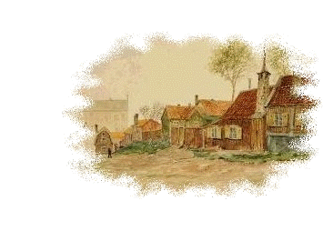
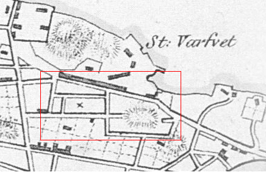
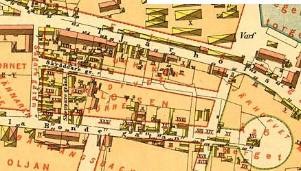
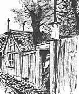

Södermalm i tid och rum. Stockholm
Historisk bakgrund till namnet Åsöberget KARTA ÅSÖGATAN SÅGARGATAN LOTSGATAN SKEPPARGRÄND KVASTMAKARBACKEN Hemsida med bl a Åsöberget

Ur Kulturhus på Söder och Djurgården, Arne Eriksson, 1998
Trakterna kring Åsöberget
INTILL TEGELVIKEN låg tidigare det område - tjärhovet- där stadens tjärbrännare höll till. Tjärhov var en plats där tjäran vräktes, dvs. befriades från vatten och kokades till beck. Den djupa dalgången mellan Åsöberget och Erstaberget passade bra för den eldfarliga verksamheten. Den låg på lämpligt avstånd från staden och den var lätt åtkomlig från sjösidan. Tjärhovsgatan och kvartersnamnen på Åsöberget - Tjärvräkaren, Tjärkokaren, Tjärboden och Tjärhovet större och mindre - minner om tjärbrännartiden. Sedan tjärhovet flyttats till Beckholmen 1687 togs området i bruk förvärvsverksamhet. Hit förlades Stockholms stads stora skeppsvarv - Stora eller Södra varvet.
|
 1818 |
Skeppsbyggmästaren var varvets hjärna och styresman. En rad dugande byggmästare har under årens lopp spritt glans och rykte åt varvet. Så fanns där t.ex. under 1700-talet en engelsman William Smith, som byggde en serie gedigna örlogsskepp. En senare efterträdare Bengt Holm byggde flera ostindiefarare. Skeppsbyggnadskunskaperna höll i sig. Den 29 september 1847 skriver Aftonbladet: »Från Stora varvet har idag kl. 12 ett nytt skepp gått av stapeln byggt för en hamburgsk skeppsredares räkning. Det lär hålla cirka 700 tons, är konstruerat av byggmästaren på stället herr Weilback och beundras allmänt ej blott för sin storlek utan även för sin skönhet«. |
Några chefstjänstemän och verkmästare bodde inom varvsområdet. Alla arbetare - så gott som samtliga var timmermän - bodde i grannskapet. Varvet tycks genom åren ha haft en mycket jämn sysselsättning. År 1697 var 65 timmermän anställda, hundra år senare var antalet 61 och år 1835 var det 74. Sistnämnda år var alla skrivna inom dåvarande Katarina församling. På Åsöberget i kvarteret Tjärhovet större fanns mer än hälften av hela arbetsstyrkan. Kv. Tjärhovet större omfattade tidigare merparten av bebyggelsen på Åsöberget.
»Kåk«-bebyggelsen på Åsöberget och Vita Bergen är av samma karaktär som enklare bebyggelse runt många stora städer än idag. På oländiga bergsknallar i stadens utkant där inga burgna vill slå sig ner och dit endast branta bergstigar når har »småfolk« fått uppföra sina enkla boningar, ofta byggda av återanvänt och dåligt virke. Den äldsta bevarade mantalslängden för området, från 1711 då trakten fortfarande var ganska glest bebyggd, redovisar att de flesta bara hade en eldstad, alltså var små s. k. enrumshus. De följande mantalslängderna redovisar en förtätad bebyggelse. Gårdarna var stora nog att rymma flera familjer i varje. Husen har kunnat överlåtas men marken har fortfarande varit i stadens ägo.
I de små rödfärgade stugorna på berget var vid mitten av 1800-talet därför även andra yrken representerade än de som arbetade vid varvet. Där fanns garvargesäller, karduansmakare, sidenväverskor, klädesvävare och bomullsväverskor- och som en påminnelse om gammal verksamhet tre tjärstuvare och en ordinarie tjärkullrare. Inom området bodde också två kryddkramhandlare och vid Tjärhovsgatan huserade ett »första klassens mångleri«. Naturligtvis fanns där också en krog - det var strumpvävaränkan Anna Elisabet Lindström som svarade för verksamheten.
Sjöfolket var även det väl representerat. En »coopverdiskeppare«, en skepparänka, sju sjömän, tre skeppstimmermän, en tulluppsyningsman och tre sjötullsvaktmästare hörde till de boende på berget.
| Bebyggelsen på Åsöberget var i stort sett väl avgränsad åt landsidan. Traktens förbindelser gick främst över sjön. Från sin upphöjda plats hade de boende en betydande del av Stockholm under sina fötter. De kunde följa arbetet på varvet vid Tegelviken. De såg gamla skepp och skutor komma in för reparation och underhåll. Och hela segelleden in till Stockholm hade de framför sig. Men produktionen vid varvet förändrades i takt med den tekniska utvecklingen. Segelfartygen ersattes av ångbåtar byggda av järn. Genombrottet för de nya fartygen kom i huvudsak under 1800-talets andra hälft. Förändringarna märktes också inom arbetarkåren. Timmermännen fick maka åt sig för maskinister, eldare och målare. |
 1885 |
Att tiderna förändrats syntes även på Åsöberget. Antalet timmermän i de små stugorna var i början på 1870-talet bara hälften mot trettio år tidigare. Järnarbetare, smeder med gesäller, lärlingar och hantlangare, plåtslagare, kopparslagare, filare, snickare, nattvakter och mekaniska elever bodde nu i husen. Det började bli trångt, mycket trångt, på berget även om man packade ihop sig.
Varvets tid vid Tegelviken hade, som allting annat, ett slut. Den 16 januari 1907 skedde den sista stapelavlöpningen. Varvet hade då varit i bruk i 220 år. Sprängskotten började eka. Stadsgårdshamnen skulle utvidgas, Londonviadukten byggas. Den nya hamnen invigdes den 2 augusti 1910. Varvet och Tegelviken var nu ett minne blott. Varvets siste skeppsbyggmästare Anders Fredrik Wiking var vemodig. Han lät sätta upp en minnestavla i brons på Londonviaduktens mur.
Nydaningens anda gickfram över denna nejd
I begynnelsen av tjugonde seklet
Nedbrytande vad gammalt var
ocb byggande denna väg
från de ävenledes
nybyggda kajerna.
Sedan två och ett kvarts sekel
hade skepp och farkoster för handel och örlig
byggts å denna plats
Den sista farkosten lämnade dess bäddar
sommaren år 1907
och Stockholms stads Stora skeppsvarv
var icke mer.
Ho kan mäta djupet av det
tankens arbete
som genom århundraden närde livet
hos den nu döde?
Och bo kan fatta vidden av den händernas id
som gav formerna?
På det minnet av det här förgångna ej må dö
och såsom en gärd åt arbetet
uppsattes denna tavla
av varvets siste skeppsbyggnadsmästare
år 1919.
Tavlan visar två arbetare av vilka den ene nitar och den andre diktar ett fartygsskrov.
Livet bland stugorna på Åsöberget gick vidare. Husen förföll alltmer men började uppskattas för sin pittoreska stämning och för de små, ofta välskötta trädgårdar som fanns kring dem. År 1913 motionerade Anna Lindhagen i stadsfullmäktige om bevarande av en del äldre karaktäristiska småbyggnader.
Hon skrev: »Till en stads sunda utveckling bör höra även omsorgen om att stadens historia, vad angår dess sätt att bygga och bo, blir bevarad genom minnesmärken - även av de enklaste och anspråkslösaste boningshus. Det är emellertid icke blott i egenskap av minnesmärken sådana mindre hus bör bevaras, utan även därför, att de med sina omgivande trädgårdar utgöra en idyll, som staden icke utan mycket stor saknad kan helt berövas.«
Motionen ledde till att Samfundet S:t Erik genom några kända museimän lät göra en inventering och utredning, som år 1915 föreslog att vissa områden skulle sparas som reservat. Att bevara ett och annat ålderdomligt hus bland modern bebyggelse gav ingen riktig bild av gammal kultur. »På flera håll återstå emellertid hela områden, bebyggda med gamla kåkar och där såväl terräng som husanläggning och gata ha bevarats i hela sin egendomlighet. Vi förorda därför, att några av dessa gammalkvarter, som staden äger, i sin helhet bevaras och fridlysas såsom asylområden, dit också enstaka trähus från andra håll kunna flyttas.«
Som ett viktigt sådant asyl- eller reservatsområde utpekades just Åsöberget. Stadens byråkratiska kvarnar malde emellertid långsamt - under tiden förföll de gamla husen som på olika sätt överförts i stadens ägo. Först 1956 fattade stadsfullmäktige beslut om upprustning av Åsöbergets bebyggelse - i många fall hade emellertid förfallet gått för långt. De första ombyggnaderna började 1956 med Åsögatan 206 och 1958 med nr 207 och 213 - arbetena fortsatte sedan under första hälften av 1960-talet.
En del hus var i så dåligt skick att det i flera fall nästan blev nybyggnader, skickligt timrade med gammalt material från olika håll som tillvaratagits vid fastighetskontorets rivningar. I stadsfullmäktiges protokoll den 2 oktober 1967 finns en detaljerad redogörelse varifrån timmerbjälklag, dörrar, golv och kakelugnar är hämtade.
Så fick Åsögatan 206 en kakelugn från ett senare rivet 1700-talshus vid Yttersta Tvärgränd. Till Skeppargränd 1 kom järnstolpar under spiskåpor från Mäster Mikaels gata 5, dörrar från Malmskillnadsgatan 58 och Högbergsgatan 21. Timmer kom från Riddersvik, Marieberg vid Farsta och från Jakobsberg och Liljeholmen. De renoverade husen fick moderna installationer - vatten, värme och el. Nya planlösningar med större lägenheter och tillbyggnader kom till.
Ombyggnaderna finansierades delvis med hjälp av förskottshyror mot långtidskontrakt. För de nya hyresgästerna i den pittoreska miljön dög inte heller den gamla gatubeläggningen av fattigkvarterskaraktär. Den upprustade Lotsgatan fick arkitektritad kullersten i cementbruk. Ny gatubelysning sattes upp av en typ som visserligen var av gammalt snitt men alldeles för elegant och främmande för detta forna fattigkvarter.
Det har med rätta diskuterats om ett bevarande av gamla hus bör ske på det förhållandevis brutala sätt som blev fallet på Åsöberget. Det är visserligen hus och miljöer som skall bestå för framtiden och de kan knappast fungera som fullvärdiga bostäder om inte nödvändiga bekvämligheter installeras. Ur museal synpunkt kan det sätt bevarandet genomfördes på Åsöberget vara tveksamt, även om området är uppskattat och eftertraktat av hyresgästerna. Besökaren bör emellertid ha klart för sig att Åsöbergsreservatet inte ger en riktigt rättvisande bild av hur »småfolk« bodde i äldre tider.
Senare har man gått skonsammare fram när man restaurerat andra reservatsområden. Fastigheterna på Åsöberget förvärvades av staden under slutet av 1800-talet och de första årtiondena av 1900-talet.
Konstnären Carl Larsson (1853-1919)
 Carl Larsson målade bl a den här bilden "Friluftsmålaren" under sin tid på Åsögatan.
Carl Larsson målade bl a den här bilden "Friluftsmålaren" under sin tid på Åsögatan.
I maj 1885 kom konstnären Carl Larsson hem till Sverige med sin familj efter att ha vistats i Frankrike. På sommaren besökte han tillsammans med svärfadern Sundbom i Dalarna och besåg dennes stuga Lilla Hyttnäs, en plats som senare skulle bli så central i Carl Larsson liv.
Familjen bodde en liten tid på Linnégatan 5. Så flyttade de till Södermalm och Åsögatan 143-145 (idag nr 197-201). Så här minns Carl Larsson i boken Jag familjens första egna hem på svensk botten:
Vi bodde till att börja med hos Karins föräldrar, men leddes snart, klättrade en dag uppför södra backarna och fick där tag på en liten håla uppe på Åsögatan, förtjusande, med inloppet till staden under oss. En gammal trädgård, där någon föregångare planterat alla möjliga träd som kunde gå i detta klimat, så till exempel bok. Bara där inte också bott en familj som kokade ruttet kött och därmed stoppat korv - till salu - förstås. Man brukar kalla sådant medaljens frånsida. Det lilla skåp, vari vi bodde, hade ett litet kök och där innanför ett rum vari jag hade mina målargrejor. Köket tjänade också till bibliotek, men ateljén också till matsal. En trappa upp var sängkammaren; men var Lotta bodde, den från svärföräldrarna medtagna pigan, kan jag inte reda upp.
Den 3 juni 1886 skriver Carl Larsson till August Strindberg och avslutar brevet: »Nu måste jag ut och måla på ett äppelträd innan blommen faller av.« I ett brev något senare till N.F. Zander, där han tackar för hjälpen med en tavelförsäljning, skriver han: »Vad dessa pengar kom lägligt. Nu kan jag ostörd fullända en oljemålning jag har bestämt till Göteborgsutställningen. Det är en rätt stor tavla (1.60 meter) med ett fasligt enkelt motiv i äppelträd (i blom!) och barn - allt i gassigt solsken. Vi trivs fortfarande och må väl här uppe på södra backama.« (Citaten ur boken Larssons.)
I målningarna från Åsögatan överförde han vad han lärt i Grez i Frankrike, men han försökte också anpassa sin måleriska stil efter den svenska naturen och det hårda ljuset. Den 16 augusti 1886 invigdes Valand, den nya konsthallen i Göteborg. Carl Larsson representerades med sina målningar från Åsögatan och en etsning. På hösten flyttade familjen till Göteborg. Carl Larsson började som lärare vid Valands konstskola. En av hans elever där kom att bli Albert Engström.
|
  Albert Engströms original Kolingen mantalsskrevs på Åsögatan 141, huset intill det där Carl Larsson bodde. Albert Engströms original Kolingen mantalsskrevs på Åsögatan 141, huset intill det där Carl Larsson bodde.
|
De tidigaste kända Söder-teckningarna av Albert Engströms hand är från 1894. Hösten
detta år hade Engström lämnat konststudierna i Göteborg. Han for till Stockholm där
han förde en ganska ambulerande tillvaro. En tid bodde han på Åsögatan under fria och
bohemiska förhållanden. I boken Ur mina memoarer skriver han bl. a.: »Jag drev runt på dagarna med skissblock och tecknade. Helst höll jag till långt uppe på Söder, där de gamla kåkarna och gårdsidyllerna tilltalade min fantasi och de små kaféemas gäster gärna sutto modell och betraktade mig som kamrat.« |
Under den här tiden tillkom oräkneliga teckningar som senare skulle bilda bakgrund till scener där Kolingen uppträdde. Kolingen förekom första gången den 20 maj 1887 i tidningen Strix. Kolingen får en kompis, Bobban, och allteftersom mejslar Engström fram ett helt släktgalleri kring kumpanerna. År 1901 tar Engström läsarna med till Kolingens bostad på Åsögatan 141 (nuvarande nr 195) »där han logerar hos Fula Filip, vilken i sin ordning innebor hos Fina Fabian, vilken mot en liters ersättning fått lov att tillbringa denna välsignade midsommar hos Fulla Frasse, som på grund av släktskap med Färsiga Fritz får disponera en halv kvadratmeter golvyta, som till större delen inkräktas av Fräcka Fredrik«.
Den burleska beskrivningen, som kan förefalla vara en Engströmsk fantasiskapelse, hade sin förebild i verkligheten - både vad gäller bostadsförhållandena och öknamnen. Knut Tengdahl, som i mitten av 1890-talet engagerade sig i hamnarbetarnas sak och hjälpte dem bilda fackförening, har i en sociologisk skildring belyst deras bostadsförhållanden:
Hamnarbetarna bor vanligen i de allra eländigaste och mest fallfärdiga träruckel upp på Söders bergsknallar och vid gränder och »backar«, som ofta nog är otrafikabla för all körtrafik. Eller också dväljas de i något kyffe i de äldsta av de större hyreskasemerna.
Tengdahl ger flera exempel på trångboddheten, här ett:
En gift hamnarbetare disponerade ett rum under gatunivån på 4,5 kvm och 1,98 meter högt. Familjen bestod av man och hustru och tre barn, och i samma rum innebodde fem logerare. Fadern, som betalte 180 kronor om året i hyra, var tvungen ha logerarna, som betalte en krona var i veckan, för att klara ekonomin.
Av logerarna, som alla var kolbärare, delade fyra på två sängar. Den femte låg på en trashög på golvet. De använde hemlånade kolsäckar som filtar. Öknamnen på hamnsjåarna var så vanliga att dessa vid arbetsuppropen inte reagerade på sina dopnamn. Där fanns till exempel i början av 1900-talet Bleka Fille, Kanel Julle, Hemlösa Manfred, Soliga Samuel, Tarm Ludde, Fläskbenet och många, många andra.
I Strixbilderna använder Engström ofta teckningar från sin första tid på Söder. Senare komponerar han in Kolingen och hans fränder i bilderna. Många Engström-teckningar har motiv från Åsögatan och Kvastmakarbacken och andra söderstråk. Engström bosatte sig, sedan han gift sig, än en gång på Söder. Den här gången på Fjällgatan 12 B - Stentolvan - som revs när Statens Hantverksinstitut byggdes 1939-1941.
Åsöberget
Åsöreservatet ligger på en norrvänd bergssluttning, och enligt stadsingenjören Johan Holms tomtbok från 1674 fanns här ingen bebyggelse alls. Slätten söderut upptogs av stora trädgårdar, som tillhörde samhällets högre skikt, och nedanför den kala bergssluttningen vid Tegelviken låg Tjärhovet, där tjära lagrades i väntan på export. Stockholm hade monopol på denna export, och tjära var näst järn och koppar Sveriges största exportartikel fram till 1700-talets mitt.
Från 1600-talets slut togs berget i anspråk för bebyggelse utmed de omgivande gatorna. Områdets största tomt, som nu används av Åsö daghem, var den första som bebyggdes. Man utnyttjade höjdläget som plats för en kvarn, som heter Bagarkvarn på Tillaei karta (1733), men som i samtida handlingar kallas Zachaus kvarn.
Vid Folkungagatan och Sågargatan uppläts mindre tomter åt anställda vid Tjärhovet, och sedan stadens skeppsvarv år 1686 hade intagit Tjärhovets plats, och tjärhanteringen flyttats till Beckholmen, blir arbetare vid varvet den största befolkningsgruppen. Marken tas så småningom i anspråk för träbebyggelse i liten skala fram till år 1736, då det blev förbjudet att uppföra nya trähus i Stockholm.
Den äldsta bevarade mantalslängden för området är från 1711, då trakten fortfarande var ganska glest bebyggd. Kvarngården uppe på berget hyrdes ut åt en mjölnaränka, men eljest beboddes gårdarna av sina ägare, anställda vid varvet eller sjöfolk eller deras änkor. Sågaren vid varvet Anders Nilsson "bebor sin ringa gård" högst uppe vid Sågargatan, och längre ner ligger skeppstimmerman Erik Hanssons gård, "nu genom arf tillfallen een Möökiäring Malin Olssdotter har koor och sälier Miölck".
Detta år skulle eldstäderna beskattas och redovisas därför i mantalslängden, men de flesta stugorna har inte mer än en eldstad. I Lotsgatan 1 bor en gatuläggaränka, "en gammal och uthfattig kiäring sitter heel ensam, har fuller två eldstäder men kan omöjeligen betahla, ty hon går och tigger mest sina bijtar".
Det gör ett fattigt intryck, men detta år var ett dåligt år, eftersom en tredjedel av stans befolkning hade dött i pesten året innan, och över hela stan finner man tomma gårdar: "ägaren är förrest åt landet" (efter högt föredöme från hovet och regeringen, som lämnade Stockholm i september 1710), "husfolket äro alle utdödde", "gården är alldeles öde och igenslagen".
De följande mantalslängderna under 1700-talet redovisar en förtätad bebyggelse och ökad befolkning av varvskarlar, timmermän, sjömän och arbetare i stadens tjänst, men också anställda vid Djurgårdsvarvet och Beckholmen. Gårdarna var stora nog att rymma flera familjer i varje, ofta med 2-3 barn per familj och enstaka tjänsteflickor och ensamstående: textilarbeterskor, lärpojkar, avskedade soldater och änkor (som "har af milda menniskor födan").
Mot århundradets slut är nya yrken representerade: järnbärare, sillpackare, tobaksarbetare, brädgårdsarbetare vid brädgården nedanför Fåfängan, målar-, skomakar- och överskärargesäller och inte så få arbetare vid Barnängen och andra textilmanufakturer - strumpvävare, klädesvävare, ullkammare och en mängd spinnerskor, i allmänhet änkor. Fortfarande är dock varvets anställda i majoritet.
Fattigdomen kom i 70-årsåldern då arbetsförmågan var slut och mantalsskrivaren antecknar orklös, utfattig, sängliggande i 4 år m m, men kunde komma tidigare. I Lotsgatan 5 bodde 1770 en 28-årig ofärdig timmermansdotter som "kryper mästa delen på händer och fötter, under mycket älände, at jämt se andra i händer", och hon skulle nu få flytta in i Lillienhoffska palatset vid Götgatan, som var församlingens fattighus.
Skönhetsrådet uttalade i en skrivelse på 1950-talet en önskan "att områdets sociala struktur bibehålles så oförändrad som möjligt", vilket var en ovanlig synpunkt på den tiden. Fastighetskontoret såg annorlunda på saken: "Med de förbättringar av lägenheternas standard och storlek, som av fastighetskontoret föreslagits, kommer klientelet att bli ett annat än nu".
Så blev också fallet, och efter fullbordad upprustning har hyresgästerna titlarna konstnär, silversmed, tecknare, pianist, redaktör, direktör, med. d:r, leg. läkare. Husen är nu enhetligt rödfärgade, gatorna är omsatta med kullersten i cement, och det pittoreska förfallet har förvandlats till ett attraktivt bostadsområde som tagits i besittning av en helt annan samhällsklass än den som bodde här de föregående 250 åren.